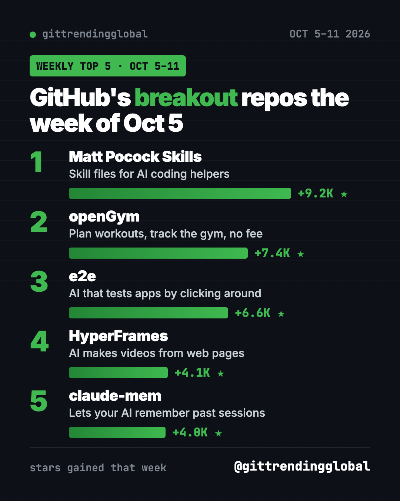
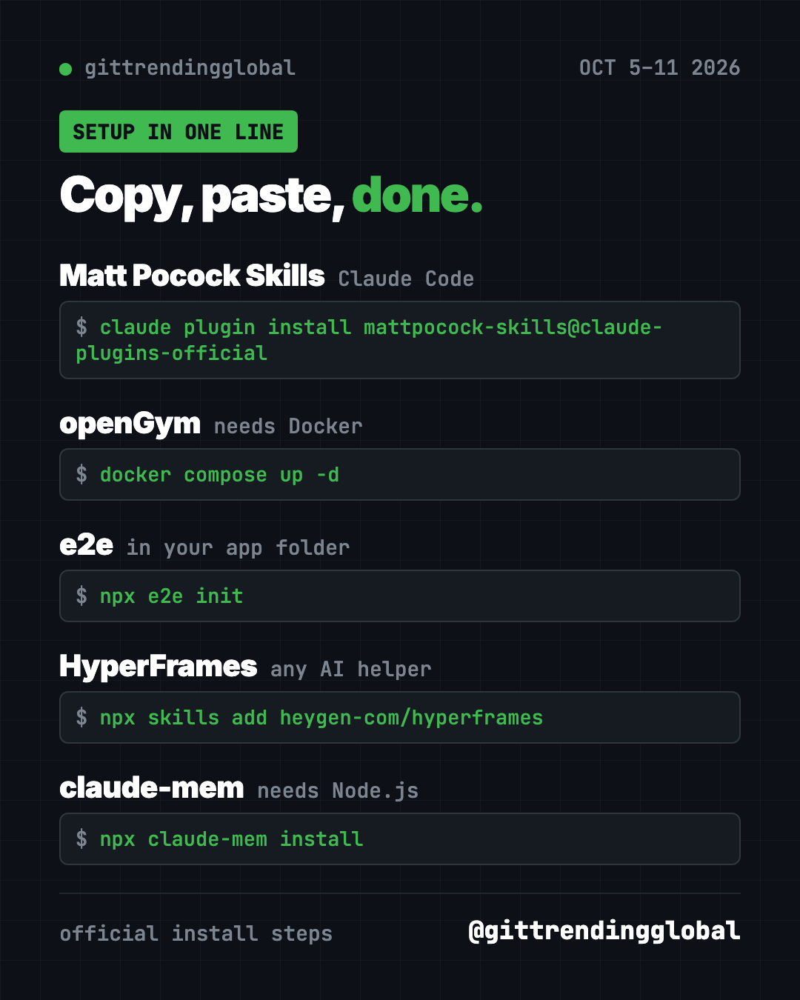
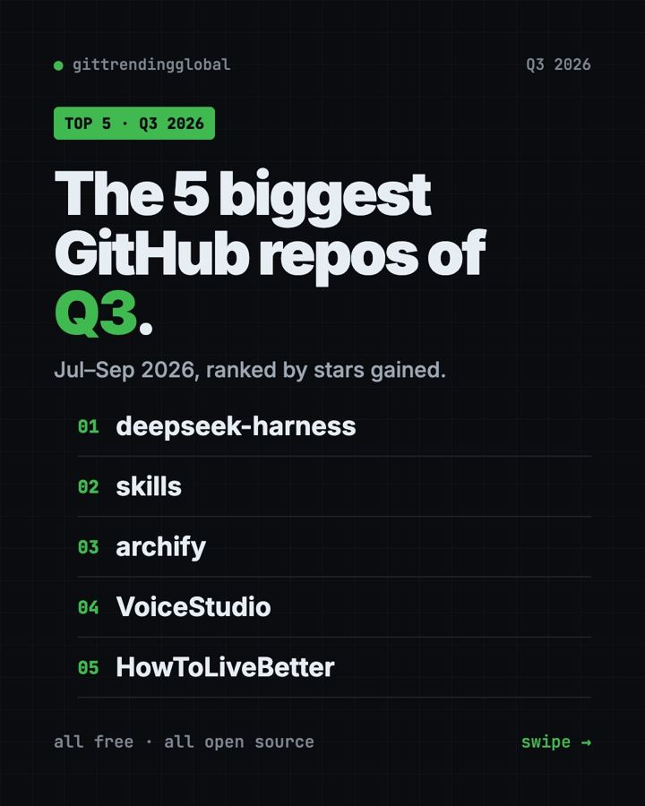

Trending GitHub Repos This Week, Oct 5 2026: The Top 5
Trending GitHub repos this week Oct 5 2026: Matt Pocock's skills, the openGym workout tracker, e2e testing, HyperFrames video and claude-mem memory.

Trending GitHub repos this week Oct 5 2026: Matt Pocock's skill files for AI coding helpers took first with +9.2K stars. In second place, a surprise for non-coders: openGym, a free workout tracker you run yourself, with +7.4K.
The rest of the list helps AI do more for you. One tests your apps, one makes videos from web pages, and one gives Claude a memory. Here's how each one works.
Key takeaways
- Matt Pocock Skills led Oct 5 to 11 with +9.2K stars. They're practical skill files for Claude Code, Codex and more.
- openGym plans workouts and tracks your gym progress, with no subscription.
- e2e lets an AI test your web or phone app from plain-language goals.
- HyperFrames from HeyGen lets AI agents make videos by writing web pages.
- claude-mem gives Claude and other helpers memory across sessions.

Trending GitHub repos this week Oct 5 2026 compared
| Repo | What it does | Best for | Free? | Setup |
|---|---|---|---|---|
| Matt Pocock Skills | Skill files for AI coding helpers | Anyone coding with AI | Yes (MIT) | One command |
| openGym | Workout planner and gym tracker | Gym-goers | Yes (AGPL-3.0) | Docker |
| e2e | AI-driven app testing | App builders | Yes (Apache-2.0), AI model may cost money | One command |
| HyperFrames | AI makes videos from HTML | Creators, marketers | Yes (Apache-2.0) | One command |
| claude-mem | Memory across AI sessions | Daily Claude Code users | Yes (Apache-2.0) | One command |
Star gains cover Oct 5 to 11, 2026. Totals were checked on GitHub on October 16, 2026.
1. Matt Pocock Skills: tried-and-tested AI habits
Stars: +9.2K this week · about 292.6K total
What it is: Matt Pocock's own skill files, "straight from my .agents directory," as the README puts it. Skills are instruction files that teach an AI helper how to handle a type of task. These cover engineering and productivity.
Who it's for: Anyone using Claude Code, Codex, Copilot or Gemini CLI who wants better habits baked in.
Everyday use: Let a skill guide your AI through planning a feature before it writes code.
Install it: For Claude Code, copy and paste this:
claude plugin install mattpocock-skills@claude-plugins-official
Pick one install method per helper. The README warns that two methods give you every skill twice.
Let Claude or Codex do it:
Install Matt Pocock's skills from github.com/mattpocock/skills, run /setup-matt-pocock-skills, and show me the 3 a beginner should try first.
Full walkthrough in our Matt Pocock skills guide.
See Matt Pocock Skills on GitHub
2. openGym: a free gym tracker you own
Stars: +7.4K this week · about 12.3K total
What it is: A self-hosted app for planning routines and logging workouts, including supersets, warm-ups and cardio. It shows which muscles you trained, which are tired and which you've skipped. Your data stays on your own machine.
Who it's for: Gym-goers who are tired of paying monthly for a tracker.
Everyday use: Log today's leg day, then see that your back hasn't had work in a week.
Install it: You need Docker. Copy and paste this:
git clone https://github.com/DuarteSantos8/openGym
cd openGym
cp .env.example .env
docker compose pull
docker compose up -d
Then open http://localhost:8080 and tap Create profile.
Let Claude or Codex do it:
Set up openGym from github.com/DuarteSantos8/openGym with Docker, open it, and show me how to back up my data folder.
Read our openGym guide for phone setup.
3. e2e: AI that tests your app like a person
Stars: +6.6K this week · about 10.7K total
What it is: A testing tool for web and phone apps. You describe a goal in plain words, like "upgrade to the Pro plan." An AI agent clicks through your app to do it. Once a step passes, e2e records it and replays it with no AI calls, until your app changes.
Who it's for: People building apps, especially with AI help.
Everyday use: Check that sign-up still works after every update, without clicking it yourself.
Install it: In your app's folder, copy and paste this:
npx e2e init
It asks for web or mobile and an AI provider, then writes an example test.
Let Claude or Codex do it:
Add e2e from github.com/tester-army/e2e to this project and write one test that signs up a new user.

4. HyperFrames: AI-made videos from web pages
Stars: +4.1K this week · about 64.4K total
What it is: A free tool from HeyGen that turns HTML, the code behind web pages, into MP4 videos. Its skills teach AI helpers to plan a video, write the page, add animation and media, then render it.
Who it's for: Creators and marketers who want short promo videos from a text prompt.
Everyday use: "Make a 10-second product intro with a fade-in title and soft music."
Install it: Copy and paste this:
npx skills add heygen-com/hyperframes
Let Claude or Codex do it:
Install HyperFrames from github.com/heygen-com/hyperframes and make me a 10-second intro video for my bakery.
5. claude-mem: Claude remembers yesterday
Stars: +4.0K this week · about 101K total
What it is: A memory add-on for Claude Code and other helpers. It captures what your AI does in each session, squeezes it into short notes with AI, and feeds the useful parts back next time.
Who it's for: People who start a new Claude Code chat every day on the same project.
Everyday use: Open a new session and Claude already knows what you finished yesterday.
Install it: Copy and paste this:
npx claude-mem install
Let Claude or Codex do it:
Install claude-mem from github.com/thedotmack/claude-mem, skip the online sign-in, and show me how to mark private notes.
⚠️ Heads up: The installer asks you to sign in by email. The README says you can skip that with a setting. Wrap secrets in
<private>tags to keep them out of memory.
Which one should you try first?
- You lift weights: start with openGym.
- You code with AI: add Matt Pocock Skills, then claude-mem.
- You make videos: try HyperFrames.
- You ship apps: set up e2e.
💡 Tip: Brand new? openGym is the most "normal" app here. Once Docker is installed, it's five lines and a browser tab.
See the month so far in our top 5 GitHub repos of October 2026 and October 2026 in AI. Missed last week? Read the week of Sept 28.
FAQ
What were the trending GitHub repos this week Oct 5 2026?
Matt Pocock Skills (+9.2K stars), openGym (+7.4K), e2e (+6.6K), HyperFrames (+4.1K) and claude-mem (+4.0K).
Is openGym really free?
Yes. It's open source under AGPL-3.0 and runs on your own computer or server. No subscription.
Does e2e need an AI model every time?
No. Tests without AI steps need no model. AI steps that pass are recorded and replayed without model calls until your app changes.
Who is Matt Pocock?
He's a well-known TypeScript teacher. His repo shares the skill files he uses with his own AI helpers.
Want one new free tool explained every day? Follow @gittrendingglobal on Instagram.
Keep reading

Trending GitHub Repos October 2026: The Top 5 So Far
The trending GitHub repos of October 2026 so far: a free Photoshop-style editor, an AI art studio, a big AI model for gaming PCs and more, explained.

GitHub Trending September 28, 2026: VoiceStudio Takes #1
GitHub trending September 28 2026: VoiceStudio, Hindsight, Paperclip, NVIDIA's OpenShell and a free 542-lesson AI course, with setup steps for each.

Best GitHub Repos Q3 2026: The 5 Biggest of the Quarter
The best GitHub repos of Q3 2026 (July to September): DeepSeek's AI agent, AI diagrams, voice cloning, coding skills and a life guide, explained simply.